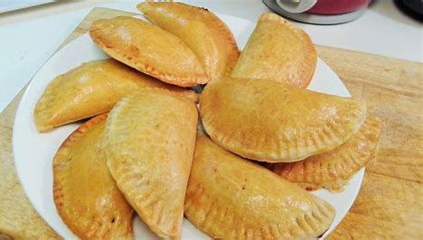

allrecipes
How to make shalom meet pie.
Today i will be teaching you how to make shalom meet pie
ingredients
- 1 lb (450g) ground beef (or a mix of beef & pork)
- 1 small onion, finely chopped
- 1 clove garlic, minced
- 1/2 tsp salt & pepper (each)
- 11 tbsp flour (for thickening)
- 1/2 cup beef broth or water
- 2 pie crusts (store-bought or homemade)
Now i will you the steps
- Mixing in your dry ingredients in a bowl.
- mix your wet ingredients in another bowl.
- Combine the wet and dry ingredients together on till dough consistency.
Meet pie
Ice creem
Muffins
lemonade
Fench fris
bing.com